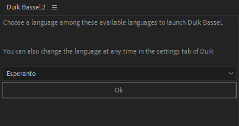
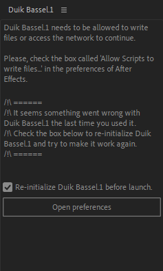

Install Duik
- Install Duik
- Supported versions of After Effects
- Installation
- Without installation
- First Run
- Fix / Uninstall Duik
Supported versions of After Effects
Duik has been tested and is working with all versions of After Effects since CC2018. That means it works correctly on: CC2018 (15), CC2019 (16) and upcoming versions.
It is also known to be working decently on CS6 (11), CC (12), CC2014 (13), CC2015 (13.5), CC2017 (14), but you can’t be sure, and Duik does not officially support these versions.
Note
CS6 has a lot of issues with the Script Panels like the ones used by Duik. Duik will work on CS6, but you may have to close and re-open it often to fix the issues you may have with the UI…
Warning
All versions before CS6 can not run Duik, sorry! It’s time to update…
Installation
1 - Download Duik from the official website.
2 - Unzip the files you have downloaded.
You’ll find several folders and files.
- README.txt contains a lot of information to help you get started with Duik.
- The Help folder contains this help pages. Double click on the file index.html to open it.
- The Tools folder contains some tools for other third-party software, like a script to export TVPaint animations.
- The ScriptUI Panels folder contains the actual Duik Bassel script you need to install.
- The Optional Panels folder contains optional individual panels to use with Duik. You can choose to install any of them or not at all.
3 - There are several ways to install Duik very easily:
a. Copy the files
Copy all the files from the ScriptUI Panels folder to:
- Windows:
C:/Program Files/Adobe/Adobe After Effects CC/Support Files/Scripts/ScriptUI Panels/ - Mac OS:
/Applications/Adobe After Effects CC/Scripts/ScriptUI Panels
You can also copy the optional individual panels of your choice from the optional Panels to the same folders.
You may need administrator privileges to install Duik this way. If you don’t have them, see the other ways below.
Warning
With the other installation methods, some features using third party tools, like transcoding sound when exporting to Adobe Audition, may not work correctly.
b. Shortcut for After Effects CC2018 and more recent
- Open After Effects
- Windows: Holding the
AltandShiftkeys, drag and drop the fileDuik Bassel.jsxonto the Project panel. - Mac OS: Holding the
OptionsandShiftkeys, drag and drop the fileDuik Bassel.jsxonto the Project panel.
c. Using the menu for After Effects CC2019 and more recent
- Open After Effects
- Use the
File/Scritps/Install ScriptUI Panel...menu to select and installDuik Bassel.jsx.
4 - Restart After Effects and Duik will be available in the “Window” menu.
Without installation
You’ll always be able to run Duik without even installing it. This is a good way to use it if you do not have administrator privileges on an older version of After Effects.
- Unzip all the files in any folder.
- Launch After Effects, and start Duik via the
File/Scripts/Run script file...menu.
First Run
On first run, Duik may first ask for file and network access, this is mandatory to make it work (Duik needs to write its icon files, effects, etc.).

Then, you will have to choose the language you want to use. Default is Esperanto. It can be changed later in the settings panel.
Fix / Uninstall Duik
If for any reason Duik won’t start anymore (this happens sometimes when the settings file gets corrupted for example, especially on Mac OS…), you can try to fix it with this simple procedure:
- In your Documents folder, delete the subfolder called
Duik Bassel.2. This will re-initialize all the settings of Duik and translations you may have added. - In the preferences of After Effects, disable the option “Allow scripts to write files and access network” which is either in the General section or the Scripts and Expressions section, depending on the version of After Effects.
- Start the main panel of Duik from the Window menu.

- A checkbox should be available allowing you to re-initialize Duik. Check it, then click on the button to open the preferences and re-enable the Allow scripts to write files… option.
- A few alerts should be shown, as Duik wipes its own files to be re-initialized ;)
If you want to remove Duik, and be sure to remove all the files it left behind, you’ll have to remove its panels by yourself from the ScriptUI Panels and then run the Uninstall Duik.jsx script provided with Duik, throught the File/Scripts/Run Script… menu in After Effects.